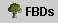
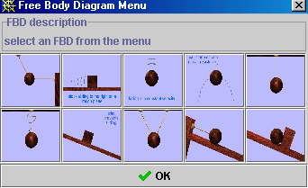

- Free Body Drawer uses projects which
consist of sets of images. The projects are listed in a menu that can
be opened by pressing (
 )
which appears in the upper, left of the applet. The figure on the right
shows a typical project menu. Just select the appropriate choice. The
menu will close and the first image of the project that you selected
will appear.
)
which appears in the upper, left of the applet. The figure on the right
shows a typical project menu. Just select the appropriate choice. The
menu will close and the first image of the project that you selected
will appear.
- When you first open Free Body Drawer the first image from the first project is loaded. To see the total set of images that are available to you, press the FBD's button () which appears on the control panel. This will open up a table of images similar to the ones shown below. Each of the small thumbnail images is a button - just click on the image you wish to work with.

- Close the Free Body Diagram Menu by pressing
- Practice choosing different projects and files.